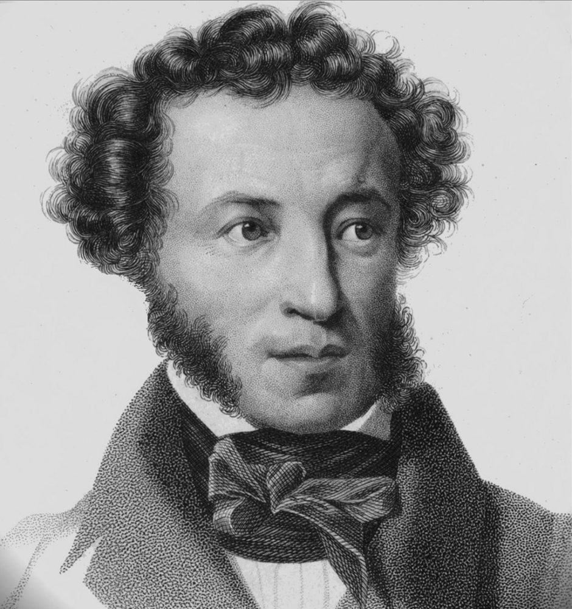

Стихотворение А.С. Пушкина "Узник"

Сижу за решеткой в темнице сырой.
Вскормленный в неволе орел молодой,
Мой грустный товарищ, махая крылом,
Кровавую пищу клюет под окном,
Клюет, и бросает, и смотрит в окно,
Как будто со мною задумал одно.
Зовет меня взглядом и криком своим.
И вымолвить хочет: «Давай улетим!
Мы вольные птицы; пора, брат, пора!
Туда, где за тучей белеет гора,
Туда, где синеют морские края,
Туда, где гуляем лишь ветер… да я!…